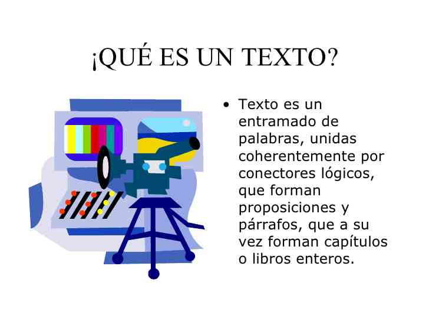
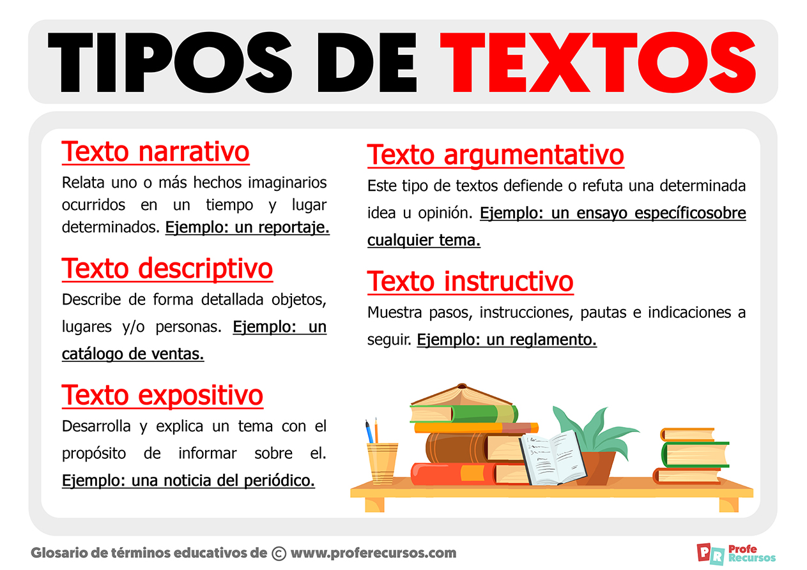

Grupo II
El Texto Descriptivo
Expositor: César D. Ortiz
Matricula: 100067451
Sabado 12 de Agosto del 2023
AGENDA
- Introducción
- Que Es Texto Descriptivo
- La Descripción: Concepto y Estructura
- Características de la Descripción
- Tipos de Descripción
- Cualidades de la Descripción
- Producción de Textos Descriptivos
- Conclusion
Introducción
Que es un texto ?

Introducción
Tipos de Texto

Que Es Texto Descriptivo

La descripción es un modo de organizar el discurso que sirve para representar la realidad a través del lenguaje. Se pueden describir todos los aspectos de la realidad, desde los más concretos a los más abstractos, es decir, se pueden representar lingüísticamente a personas, animales, objetos, paisajes, épocas, sentimientos, etc.
La Descripción: Concepto y Estructura
Características de la Descripción
1. Coherencia: Las ideas deben estar relacionadas y ordenadas de manera lógica.
2. Cohesión: Uso de conectores y recursos lingüísticos para mantener la fluidez.
3. Adecuación: Adaptar el lenguaje y estilo al contexto y público.
Tipos de Descripción
Descripción Objetiva: Imparcial, basada en hechos y datos concretos.
Descripción Subjetiva: Incluye emociones y opiniones del autor.
Cualidades de la Descripción
Precisión: Uso de términos específicos para transmitir detalles.
Claridad: Evitar ambigüedades y confusiones en la interpretación.
Vivacidad: Empleo de recursos literarios para hacer la descripción más viva y atractiva.
Producción de Textos Descriptivos
Idear: Analizar el contexto y recolectar información sobre el objeto a describir.
Ordenar: Estructurar las ideas en una secuencia lógica: introducción, caracterización, relación con el entorno.
Textualizar: Redactar el texto utilizando recursos como adjetivos, verbos en presente, definiciones, comparaciones y terminología específica.
Conclusión


Fin